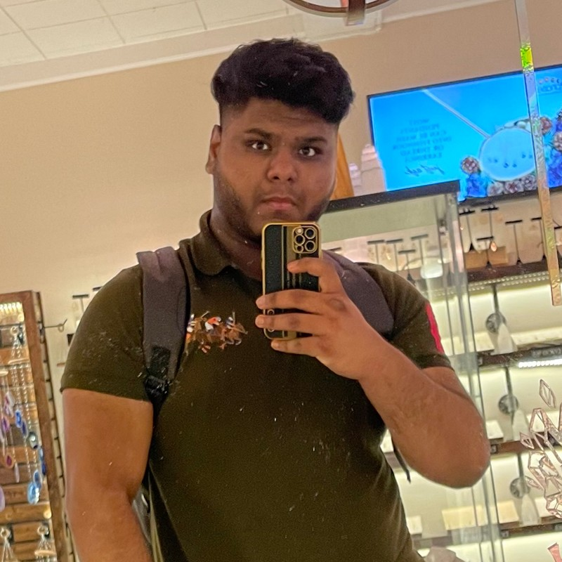

About Me
My name is Muhammad Humayun Azam and I am a Junior at Rutgers University- New Brunswick, a computer science major who is compassionate about java programming and databases. Moreover, eager to explore new programming languages such as “C++” which is used in Unix/Linux leads to a similar foundation as software developer: Cybersecurity. As a Junior, I have a decent knowledge from basic Algorithm development and basic procedural and object- oriented problem-solving techniques to the software engineering principles of encapsulation, information hiding and code reuse, and discusses how these concepts are used to build abstract data types.
Career Summary

I completed my A.S in computer science in May 2022. After the completion of my Freshmen year, i got an internship in a company named Spencers and Spirit where i was assigned my role as junior Cyber Security Analyst. I worked with some increible people from Cyber Security and Networking department. Now i am junior in Rutgers hoping to pursue to B.S in computer science and also further my career with the help of this bootcamp that i am currently enrolled in and graduate as a Full Stack Web Developer.
Work Sample

Click here to view the code
Click here to view the deployed Web page.
Description: My very first Front-end project where we created a book explorer as a group. We used technologies like HTML, Tailwind CSS framework, JavaScript, Server-side APIs, Local Storage, and moment.js where the user can search for the book by date or title and the best sellers of that time would show up and from there they can access the book reviews and if they want they can either borrow it from NY library or buy it from external websites such as amazon.
Future Goals

My recent future goal is to successfully graduate from the bootcamp and get a job as a software developer while nearing the end of bootcamp or soon enough after i graduate. I have this mindset that having A.S in computer science where i was taught to master Java and considering my enrollment in Rutgers to pursue Bachelors. I believe this bootcamp will be a huge boost for me to get where i want to be before time.